Intracavity Optical Control via van der Waals Heterostructures
A DBR-bounded cavity integrating graphene, MoS₂, and black phosphorus layers to provide
phase, amplitude, and polarization modulation at DUV wavelengths — with every displayed value
classified against its evidence source.
~32%
Stack Absorption
DERIVEDMODE-1 VALID
248–365 nm is the only fully supported intracavity regime. 193 nm is absorption-limited and constrained to a hybrid path. EUV is explicitly forward-looking and routed through a separate HHG pipeline. No displayed quantity exceeds its evidence classification.
Section 1
Regime Architecture
The cavity operates in one of three regimes. The evidence base, displayed quantities, and guardrail behavior change with each. Mode 1 is the only regime where intracavity layer-by-layer values are presented with confidence. Mode 2 and EUV forward explicitly constrain or disable these values.
Mode 1 · 248–365 nm
Full intracavity modulation
Phase (graphene), amplitude (MoS₂), polarization (BP) — all evidence-backed within the supported DUV range. Tolerable absorption (~32% DERIVED MODE-1 VALID). Cavity viability demonstrated.
Mode 2 · 193 nm — non-viable intracavity
Constrained fallback
Intracavity modulation is not physically viable at 193 nm due to absorption constraints (~99% DERIVED HYBRID-MODE). Phase, amplitude, and polarization axes are disabled. Any useful 193 nm control requires an external hybrid stage downstream of the cavity.
EUV Forward
HHG pipeline
Intracavity layer values are disabled. Focus shifts to HHG generation, propagation, dose, and resist interaction. The vdW cavity remains relevant as an upstream optical conditioning layer prior to HHG generation — spectral and polarization state preparation occurs at the cavity level before the nonlinear conversion stage.
Regime guardrail. Intracavity modulation is not physically viable at 193 nm — absorption at the vdW stack level eliminates useful field modulation before any control axis can act. This is not a tuning limitation; it is a physical constraint. EUV remains explicitly separated as a forward architecture supported by HHG system simulation, not the vdW cavity alone. Any displayed value outside Mode 1 is constrained, disabled, or tagged ARCHITECTURE-LEVEL.
Within Mode 1, the cavity is a seven-layer functional stack. Each layer has a specific optical role, and each role is bound to a specific evidence source.
Section 2
Seven-Layer Functional Stack
The cavity is bounded by dielectric DBR mirrors and contains three functional van der Waals layers — graphene for phase control, MoS₂ for amplitude modulation, and black phosphorus for polarization shaping — separated by hBN spacers. Each layer transforms the circulating optical field through a specific physical mechanism: graphene shifts the phase via carrier-density-dependent refractive index, MoS₂ attenuates amplitude via wavelength-dependent absorption, and black phosphorus rotates polarization state via crystallographic anisotropy. The cumulative output field emerges from the ordered composition of these transformations — not from independent, isolated layer effects. Layer ordering matters because each transformation acts on the field state produced by the preceding layer.
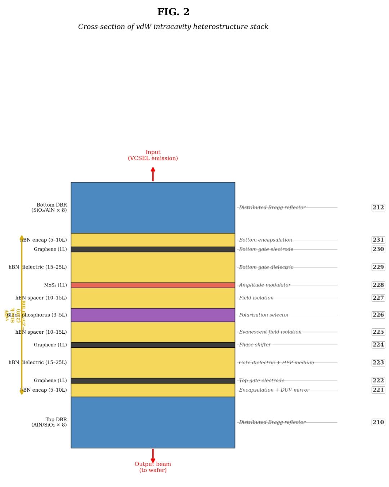
Process-realistic stack cross section. MoS₂ layer deposited via ALD MoO₃ precursor route with sulfurization, validated by Raman, XPS, ellipsometry, and uniformity mapping.
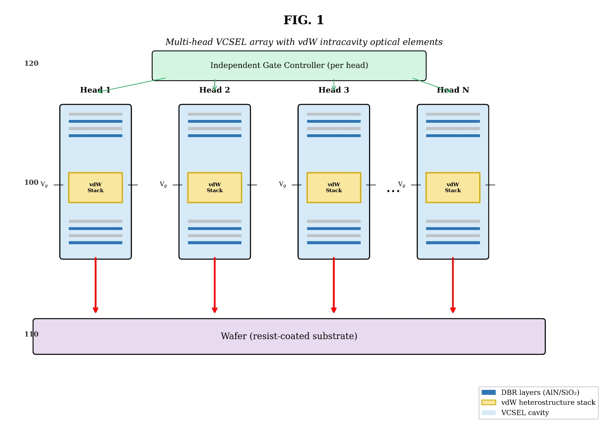
System architecture overview. The vdW cavity controls the intracavity field in Mode 1; 193 nm uses a hybrid external stage; EUV routes through a separate HHG pipeline.
Bottom DBR
Defines cavity reflectivity and field confinement. REPO
~1% DERIVED
hBN spacer
Low-loss spacing and field placement control. DERIVED
~0.5% DERIVED
Graphene
Phase shift via carrier-density-dependent refractive index. DERIVED
~4% DERIVED
MoS₂
Amplitude attenuation via wavelength-dependent absorption. PROCESS-VALIDATED
~18% DERIVED
Black phosphorus
Polarization rotation via crystallographic anisotropy. SIMULATED
~7% DERIVED
Top spacer
Positions the emitting field before output coupling. DERIVED
~0.4% DERIVED
Top DBR / output
Output coupling and spectral filtering. REPO
~2% DERIVED
All per-layer loss values are derived estimates within the Mode 1 (248–365 nm) regime, not directly exported solver meters. Classification: DERIVED. MoS₂ loss is the dominant contributor and anchors the power budget.
Evidence classification. Every displayed quantity is tagged: REPO = directly from repository evidence. DERIVED = computed from repository-backed inputs. PROXY = illustrative only, not physically validated. The page never presents proxy values as if they were solver outputs.
Field Transformation Through the Stack
Schematic representation of how the optical field is progressively transformed as it traverses the seven-layer stack in Mode 1. Each layer acts on the field state produced by the preceding layer. Intensity, phase, and polarization encodings are illustrative — not solver outputs.
SCHEMATICDERIVEDMODE-1 ONLY
Input
█
100% power
φ₀ phase
↔ linear pol
▶
Bottom DBR
▨
Confines field
~1% loss
pol preserved
▶
hBN
─
Optical path
~0.5% loss
low perturbation
▶
Graphene
φ
Phase shift
~4% loss
φ modulated
▶
MoS₂
▼
Amplitude cut
~18% loss
dominant absorber
▶
BP
↻
Pol. rotation
~7% loss
anisotropic
▶
Top spacer
─
Field positioning
~0.4% loss
pol preserved
▶
Top DBR
▩
Output coupling
~2% loss
spectral filter
▶
Output
█
~66% power
φ + ΔA + ΔP
modulated output
Intensity (bar fill = remaining power)
φ Phase shift (graphene layer)
▼ Amplitude attenuation (MoS₂ layer)
↻ Polarization rotation (BP layer)
The three functional layers each provide a distinct control axis. Their evidence bases are independent.
Section 3
Three Control Axes
Intracavity modulation in Mode 1 is decomposed into three independently evidenced control axes. Each axis is tied to a specific material layer, a specific simulation or process evidence source, and a specific figure in the repository.
Phase — Graphene
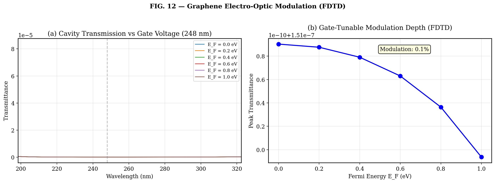
FIG 12 · Gate modulation / Pauli blocking
SIMULATED
DERIVED
MODE-1 VALID
Graphene is the primary phase-control axis. Carrier-density tuning modulates the optical phase within the cavity. Phase magnitude is summarized conservatively rather than imported as a direct number.
Amplitude — MoS₂
FIG 2 · Process-realistic stack cross section
PROCESS-VALIDATED
DERIVED
MODE-1 VALID
Amplitude behavior is derived from the absorbing-layer role of MoS₂. Process readiness is repository-bound to ALD/metrology evidence: Raman, XPS, ellipsometry, uniformity mapping.
Polarization — Black Phosphorus
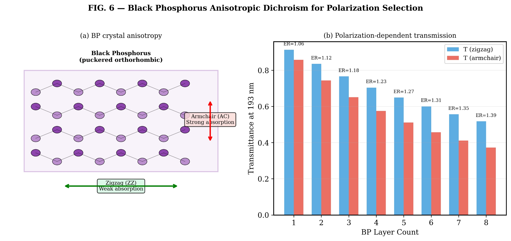
FIG 6 · BP dichroism
SIMULATED
REPO
MODE-1 VALID
Polarization function is bound to BP anisotropy / dichroism evidence. Quantitative effect size remains conservative. Environmental handling constraints apply to BP integration.
Mode constraint. All three control axes are presented as Mode 1 (248–365 nm) only. At 193 nm, intracavity modulation is constrained by absorption and forced to a hybrid-only path. In EUV forward mode, intracavity control axes are disabled entirely.
The MoS₂ amplitude layer is the only layer with direct process-level validation. Its metrology readiness anchors the fabrication realism of the full stack.
Section 4
MoS₂ Process Readiness
The MoS₂ layer is the process-realism anchor for the stack. It is the only functional layer with direct metrology validation (not just optical simulation). The ALD precursor route — MoO₃ deposition followed by sulfurization — has been characterized across four independent metrology channels.
| Metrology | Status | Classification |
|---|
| Raman spectroscopy | Process-validated | PROCESS-VALIDATED |
| X-ray photoelectron spectroscopy (XPS) | Process-validated | PROCESS-VALIDATED |
| Spectroscopic ellipsometry | Process-validated | PROCESS-VALIDATED |
| Uniformity mapping | Process-validated | PROCESS-VALIDATED |
All metrology is repository-bound. Process status is elevated to REPO-level evidence tied directly to ALD flow and metrology readiness.
With per-layer losses established, the cumulative power budget through the stack becomes a derived quantity that no individual display should overstate.
Section 5
Intracavity Power Budget
Power is tracked cumulatively through the seven-layer stack. Each segment is a derived allocation tied to per-layer loss estimates in Mode 1. The budget is not a raw solver export — it is a conservative composition of individually classified layer losses.
DERIVED
MODE-1 ONLY
Cumulative optical power through the layer stack at 248 nm. MoS₂ is the dominant loss contributor (~18%). Total output efficiency depends on DBR coupling and output-coupler design.
Budget Segments
Pump to cavity input100% reference
DBR confinementDerived segment
vdW active stackDerived segment
Output to free spaceDerived segment
Each segment is a derived allocation, not a directly exported solver meter.
Cavity Figures
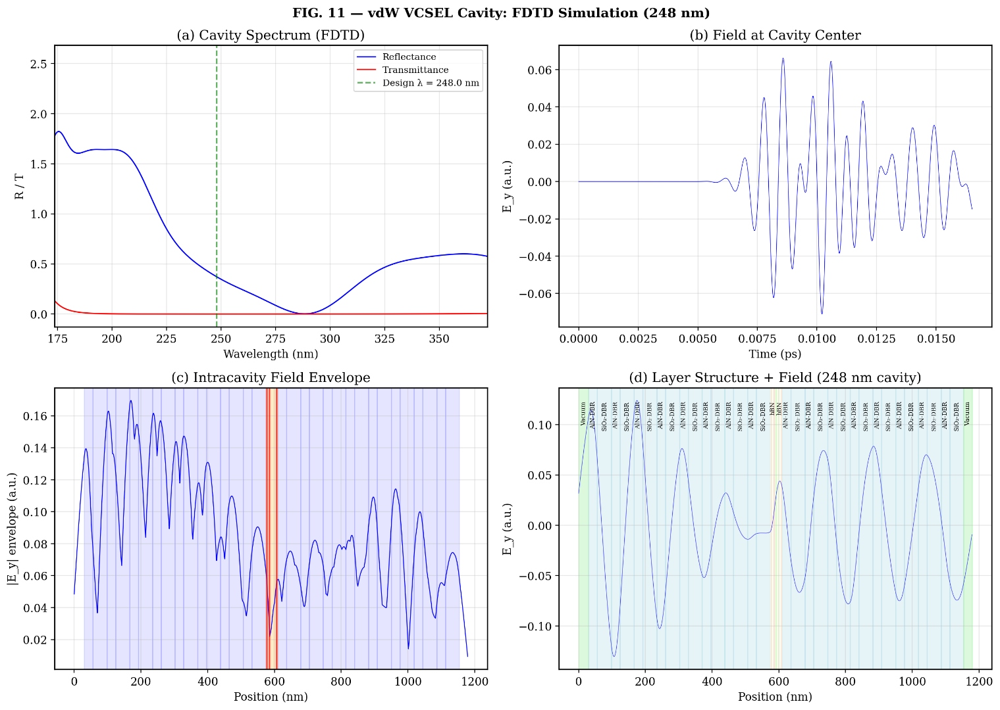
FIG 11 · 248 nm cavity output. Repository evidence binding the supported intracavity regime.
The optical and process evidence above covers the intracavity regime. The remaining evidence sources address DBR behavior, cavity resonance, and the forward EUV architecture.
Section 6
Evidence Sources and Validation
Six primary evidence sources underpin the architecture. Each is classified by type (simulation, process-validation, or architecture-level), scope (which mode it supports), and binding (which figure it maps to). No evidence source is used outside its declared scope.
vdW Optical Simulation Stack
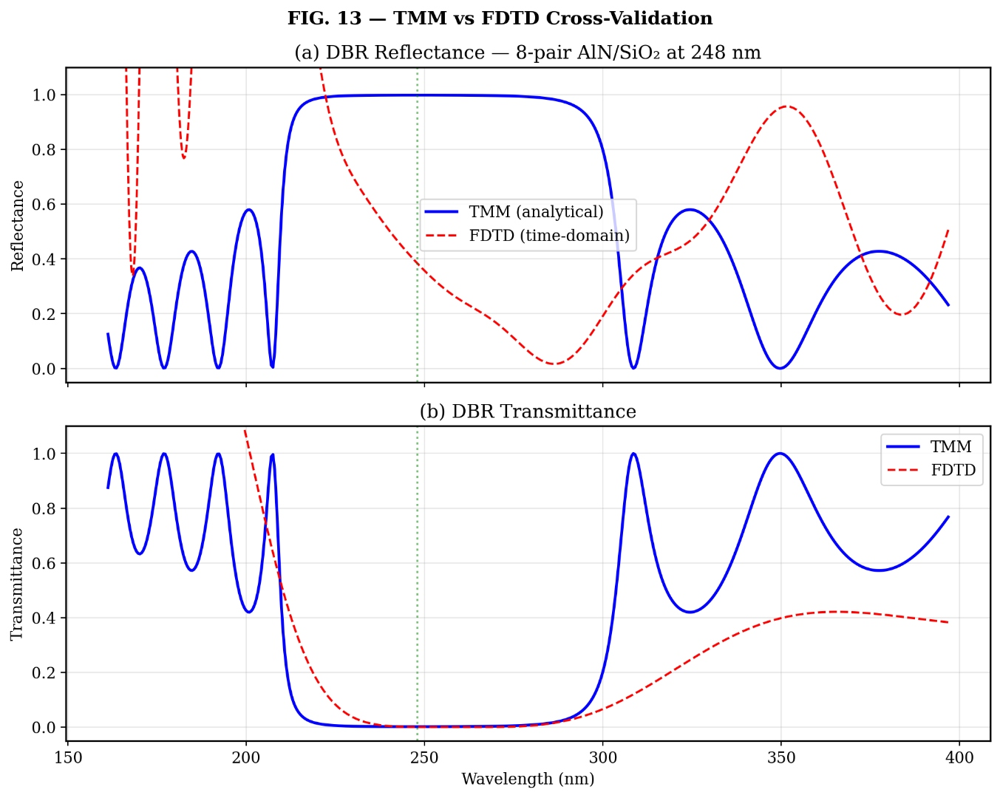
FIG 13 · TMM vs FDTD consistency
SIMULATEDMODE-1 VALIDREPO
Layer transfer, field evolution, cavity viability. Primary repository evidence for the validated intracavity regime.
ALD MoS₂ Process + Metrology
FIG 2 · Process-realistic layer stack
PROCESS-VALIDATEDMODE-1 VALIDREPO
Fabrication realism, amplitude layer readiness, thickness/uniformity monitoring. Repository-bound process evidence.
248 nm Cavity Operation
FIG 11 · 248 nm cavity output
SIMULATEDMODE-1 VALIDREPO
Mode-1 resonance and viable intracavity emission regime. Repository evidence binding the supported intracavity regime.
Graphene Gate Modulation
FIG 12 · Gate modulation
SIMULATEDMODE-1 VALIDREPO
Phase-control evidence in the supported DUV cavity regime. Primary source for phase control claims.
BP Dichroism Evidence
FIG 6 · BP dichroism
SIMULATEDMODE-1 VALIDREPO
Polarization anisotropy and dichroic behavior. Primary source for polarization-control claims.
HHG / EUV System Simulation
FIG 1 · System overview
FORWARD-EUVARCHITECTURE-LEVELREPO
Generation, propagation, PSF synthesis, dose, resist interaction. Used only for forward EUV architecture-level claims, not intracavity layer proof.
Section 7
Supporting Figures
Additional repository-bound figures supporting the cavity architecture and individual layer behavior.
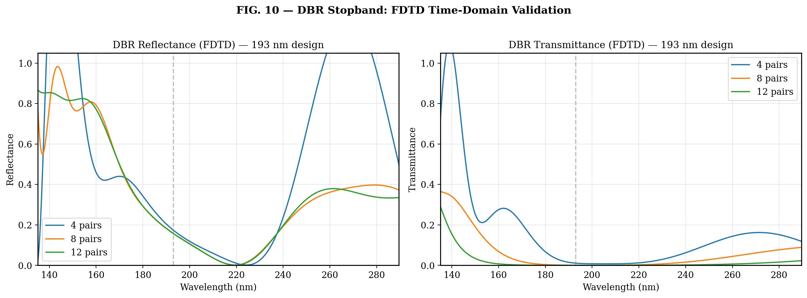
FIG 10 · FDTD DBR stopband. Defines cavity reflectivity and spectral selectivity.
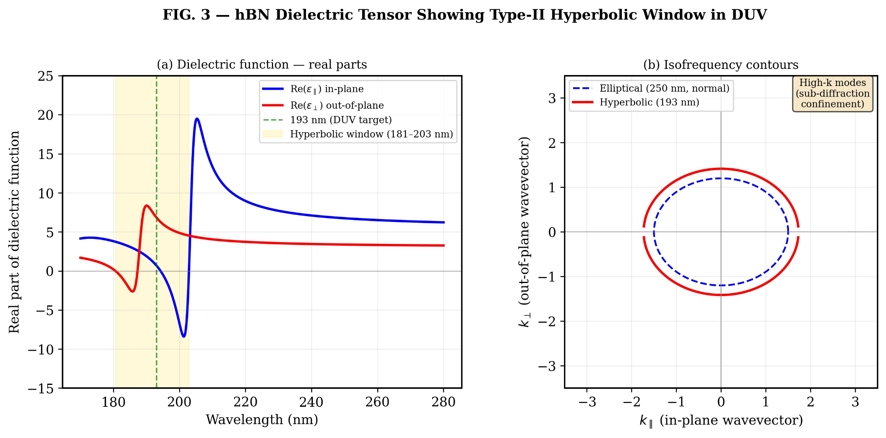
FIG 3 · hBN dispersion / hyperbolicity. Supports spacer layer optical role.
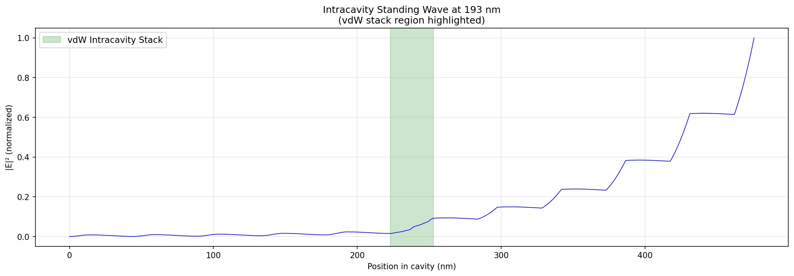
Field profile / cavity envelope. Positions the emitting field before output coupling.
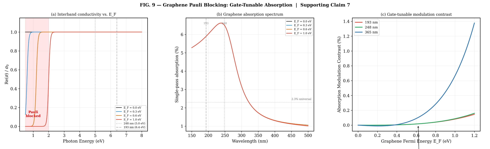
FIG 9 · Pauli blocking. Graphene optical transition modulation mechanism.
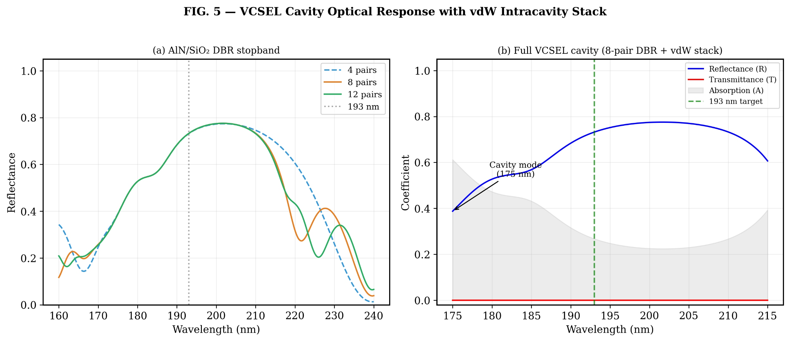
FIG 5 · Cavity spectrum. Resonance behavior of the bounded stack.
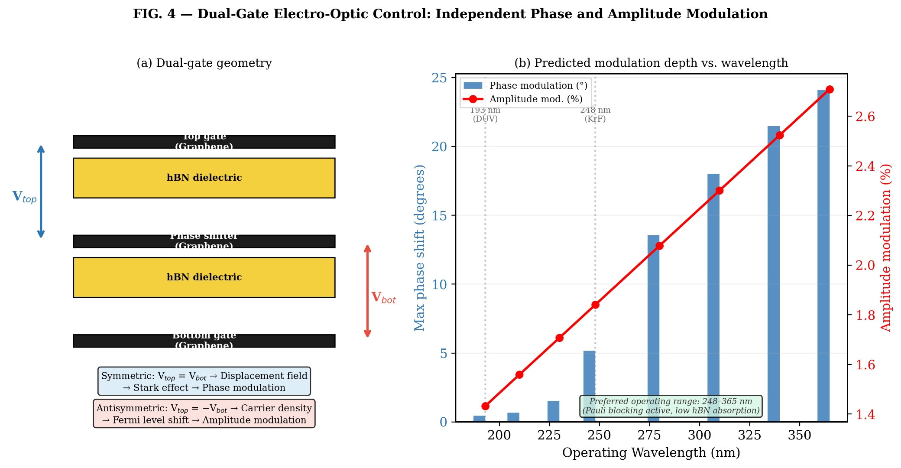
FIG 4 · Dual gate structure. Carrier-density control topology for graphene.